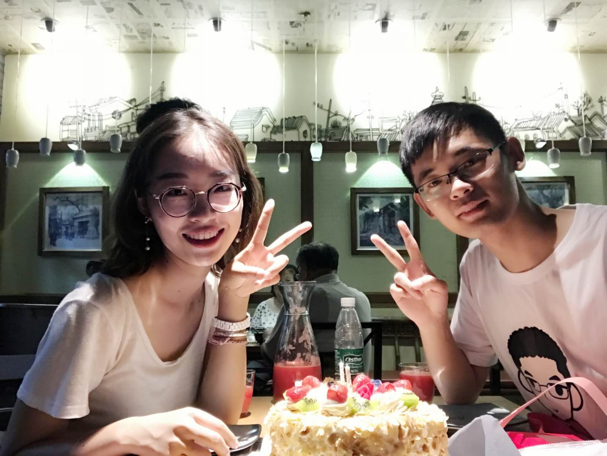
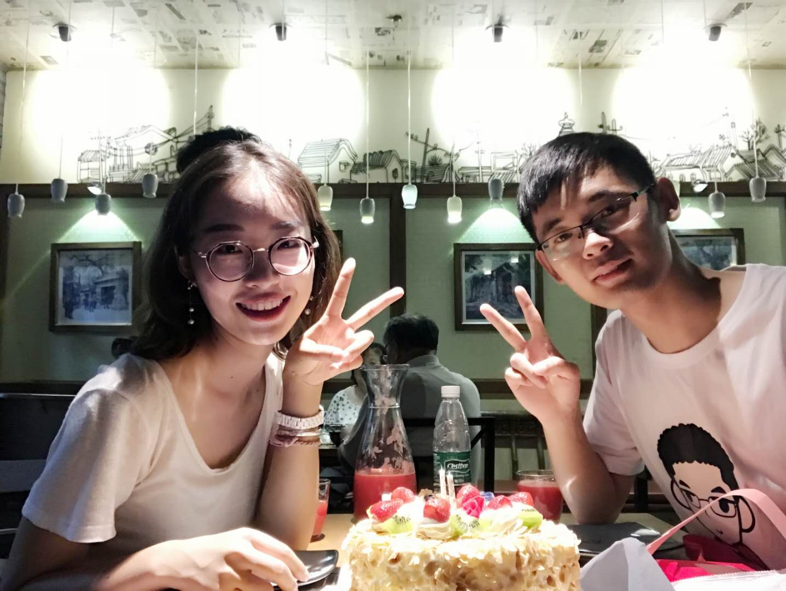

亲爱的花花：
情人节快乐！猪好想好想你啊，尤其是在情人节的这一天，去年情人节我们刚回到北京，我们去天坛公园，当时下了很大的雪，我们在那里拍照，花的脚脚冻得很凉，我们还去望京的凯德mall吃饭，回宾馆睡觉觉，从宾馆的窗户能看到望京SOHO，这些画面还印在猪的脑袋里，此刻真的好想花在身边啊。我们不知不觉已经在一起快两年了，两年的时间在一生中虽然不算长，但在猪的心里比遇到花前的二十多年都开心，都更有意义。还记得第一次跟花打招呼的自我介绍，第一次和花看电影，陪花吃的饺子，第一次牵花的手，第一次接吻，第一次给花送花，接花下班，第一次和花去旅行，第一次陪花过生日，参加花的毕业典礼，第一次去成都，去稻城，第一次去听雷子的演唱会，第一次陪花过情人节...，还有好多好多的第一次猪都历历在目，永远不会忘记。去年我们一起找实习，找工作，有过痛苦，有过迷茫，可是我们都一起扛了下来，每次猪不顺利不开心的时候花都会安慰猪，鼓励猪，收到offer时花也为猪开心，夸猪厉害，有花的陪伴猪才能坚持着走过来。不知不觉花已经是猪生命中最重要的部分，是对猪来说最重要的人，猪一辈子都离不开花了，花开心时猪更开心，花难过时猪比花更难过。猪好幸运啊，遇到花之前猪从来不知道爱情是这么的美好，花是那么的善解人意，那么的爱猪，花太好了，好到用语言完全无法描述，猪只有比花爱猪更爱花才能对得起这份幸运，猪会永远都爱花，永远跟花在一起的，我爱你~还有不管去不去成都，猪都会跟花一起的，猪的生活不能没有花，花在哪里猪就要去哪里，因为没有花的日子真的好难过，希望疫情早点结束，这样就能早点见到花了。
永远爱花的猪


 
